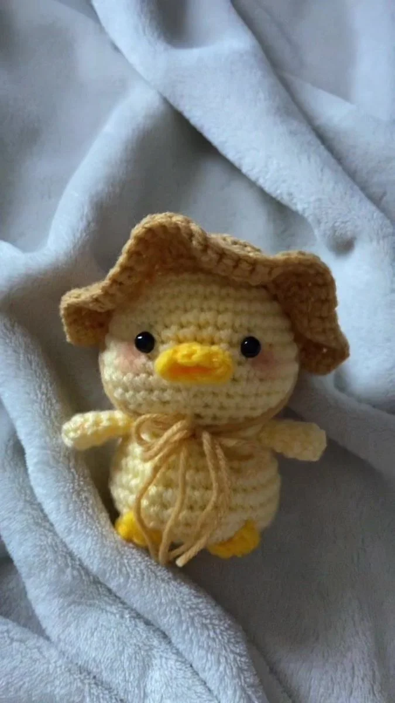

Los patitos están diseñados para que puedas llevarlos contigo a cualquier lugar, con ropita intercambiable que te permite variar su estilo según la ocasión. Son suaves, alegres y encantadores, ideales como regalo especial o para coleccionistas que disfrutan de piezas únicas y creativas.

hilo yarnart jeans en colores amarillos y cafe crema
aguja de crochet de 1,5 mm
2 ojos de seguridad de 9 mm
alambre de 1 mm
tijeras